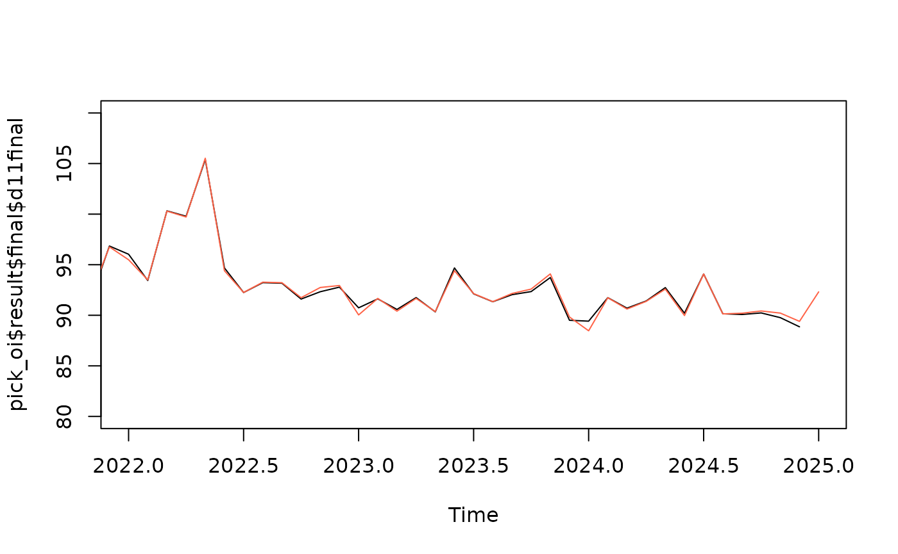
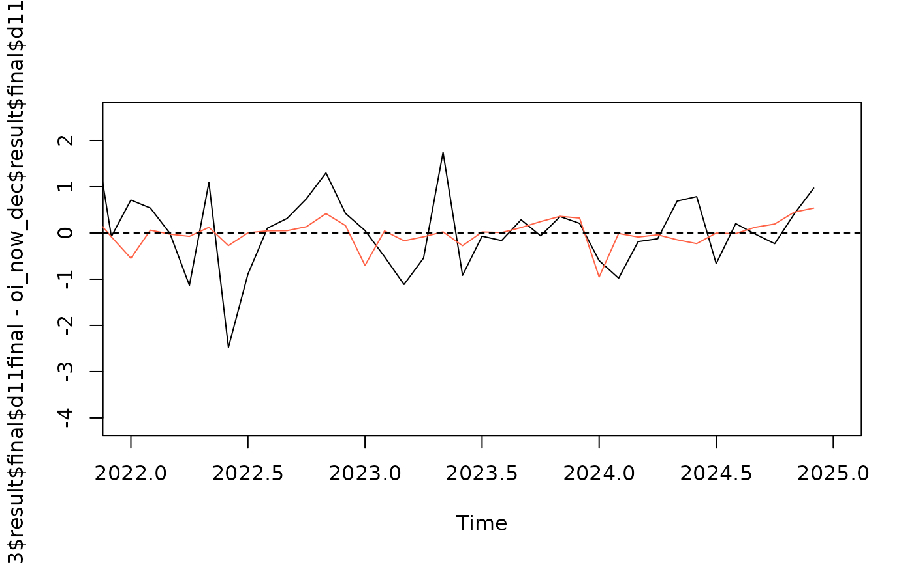

What is pickmodel?
introduction.RmdWhat is pickmdl?
Pre-adjustment and forecasting with a sARIMA model is of central importance to the x13-metholdogy, as heterogenous calendar effects and effects of outliers need to be taken into account before seasonal components and trend can be calculated with the filter based methods in x13. In Jdemetra and rjd3, the procedure for selecting an sARIMA model is the automodell procedure. The pickmdl approach differs from this automodel approach by restricting the model choiche to an ordered list of five robust models. The pickmdl selection procedure selects the first model on the list that fulfills three pre-defined criteria.
The five sARIMA models on the pickmdl list are: The tree pre-defined criteria are:
- The absolute average percentage error of the extrapolated values within the last three years of data is less than 15 percent
- The p-value associated with the fitted model’s Ljung-Box Q-statistic test of the lack of correlation in the model’s residuals must be greater than 5 percent
- There are no signs of overdifferencing. There is an indication of overdifferencing if the sum of the non-seasonal MA parameter estimates (for models with at least one non-seasonal difference) is greater than 0.9.
Why use pickmdl?
By restricting the model choiche to an ordered list of five models, the pickmdl approach prioritizes model stability. The pickmdl choiche may not find the optimal fitted model, but one or more models on the list will often be of acceptable quality. This may lead to less future revisions of seasonally adjusted data, as the pickmdl approach tends to select the same model if this model is of acceptable quality. The search for the model with the optimal fit, on the other and, may introduce model change when there are only minor improvements to the model fit.
Let us illustrate this point with an artifical example where we use the Norwegian retail index for nace 47.6 Retail sale of cultural and recreation goods. In accordance with the best practice defined in ESS Guideluines on seasonal adjustment, model identification should be done once a year, and the sARIMA model should be kept according to the chosen refreshment policy . Let us say that model identification is done in January based on data until the preceeding December. Through the year, the model is kept the same in accordance with the Outliers refreshment policy.
At the moment of model selection in in january 2024, the model selected by the automodel approach is the (0,0,1)(0,1,1) model, which will be used throughout the year of 2024. In january 2025, the selected model will be (1,0,0)(0,1,1), which will be used throughout 2025. In the figure below we compare We see that the change of models introduces revision
With the pickmdl approach, the model restriction leads to the selection of the third model on the list (2,1,0)(0,1,1) in both years. As there is no model choiche, there will be less revision


